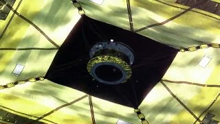
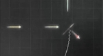
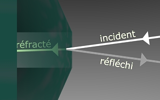
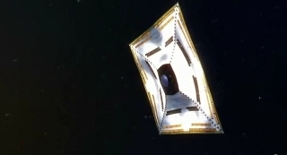
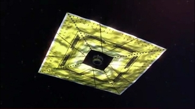
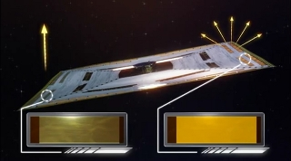
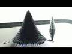
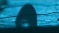
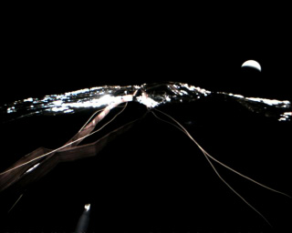

|
|
Navig.
page/section


_____
|
|
Pages soeurs
I, A propos des liants
II, Bulles, siccativ., struct. élec.
III, Caséine, phosphore, dissociation
IV, Les orbitales
V, L'aérogel
VI, Polarisation de la lumière
VII, Sfumato et diffusion Rayleigh
VIII, Les interférentielles
IX, Dextrine, farine et chiralité
X, L'ocre bleue
XI, Les métamatériaux
XII, Le jaunissement
XIII, Laser etc.
XIV, L'holographie
XV, L'holographie numérique
XVI, Extérieur, intérieur, chaux
XVII, L'électrolyse et les ions
XVIII, L'électricité, un peu plus loin
XIX, Oxydation, métaux
XX, Les échelles
XXI, Nature et évolution des résines
XXII, Le mouillage pigmentaire
XXIII, La molette
XXIV, Blanche neige
XXV, Lumière et matière
XXVI, Magnétisme
XXVII, Ambre et vieilles branches
XXVIII, L'origami miroir
XXIX, Le feu
XXX, Peau du métal
XXXI, La ville en un souffle
XXXII, Oxyder des matériaux
XXXIII, Ocre bleue, une solution
_____
|
Copyright © www.dotapea.com
Tous droits réservés.
Précisions cliquer ici
|
|
| |
|
|
Les dialogues sur la physique-chimie
appliquée aux arts
Chapitre
XXVIII
L'origami miroir |
 |
dial dial
dial
|
Une réalisation spatiale
avant-gardiste japonaise est l'occasion d'aborder sur le mode du dialogue le
thème de la réflexion de la lumière au fil d'une discussion parsemée
d'images et de digressions, entre
Jean-Louis, physico-chimiste au CNRS, et Emmanuel,
candide.
|
|
Emmanuel :
Jean-Louis je sais pas si tu as vu passer cette information : les
Japonais ont lancé une voile solaire vers Vénus, "Ikaros". Apparemment
c'est une mise à l'épreuve technologique difficile et prometteuse.
Quelques liens ci-contre ->
Jean-Louis : Sympa, la voile. LA question
c'est le déploiement. C'est ça qui risque d'échouer.
Emmanuel : Oui, c'est un peu un origami
finalement.
Comme cet objet doit atteindre la planète Vénus dont l'orbite est plus
proche que la notre du soleil, il va en quelque sorte contre le vent. Sans
coque, sans dérive, sans quille et sans eau, il ne peut procéder comme
un navire sur l'océan. Il doit recourir à la mécanique
céleste, mais pour cela il lui faut une certaine puissance, ou bien une
impulsion initiale.
|
|
|
[sur Ikaros]
Un bon article sur EOportal.org
Une vidéo en japonais, certes, mais permettant de se faire
visuellement une idée du projet, la deuxième moitié en particulier.
Le
descriptif d'Ikaros sur le site de la Jaxa |
|

Ikaros - Images JAXA -
Diffusion publique YouTube
La voile d'Ikaros - dont la diagonale
n'est que de 20m - n'est pas recensée dans la documentation comme devant
être utilisée comme un moteur.
Dans les années 70/80, alors que ce mode de propulsion
commençait à être envisagé, on évoquait d'immenses surfaces (comptées en
centaines de km2 a minima) n'autorisant pourtant que de modestes
accélérations par rapport aux moteurs fusées. On tablait sur la
constance. Mais les capacités techniques nécessaires à ces projets
grandioses était hors de portée.
Le mérite de l'agence spatiale japonaise, la JAXA, semble de commencer humblement et
astucieusement. La
petite voile de la sonde expérimentale est dépliée - ce qui est un
exploit, on l'a dit -, après quoi son principal rôle est de manoeuvrer,
autre exploit.

Elle le remplit, ce rôle, de manière fort originale : en modifiant sa
propre réflexivité grâce à des cristaux
liquides situés pour ainsi dire dans la voile.
Cela pose naturellement différentes questions.
Commençons par celle-ci : entre un objet absorbant et un objet
réfléchissant, lequel est le plus propulsé en arrière à l'impact d'un
photon ?
Jean-Louis : Un photon réfléchi transmet
deux fois plus d'impulsion qu'un photon absorbé.
Emmanuel : D'accord. Maintenant, parlons de
l'angle. Dans la vidéo référencée ci-dessus, on trouve ce schéma (la voile est le
plan incliné à peu près au
centre) :

L'angle d'incidence semble déterminer la direction de la propulsion, ce
qui n'est pas une évidence car on parle là d'énergie poussant de la
matière et non de deux solides comme au billard. Cette propriété doit
être bien utile lorsqu'il s'agit de voguer à contrevent car cela permet
de freiner, donc à terme de tomber.
Finalement, comment un photon est-il réfléchi ?
Jean-Louis : Quand tu as une interface
entre deux matériaux, la lumière qui traverse est toujours
réfractée et
réfléchie.

Et selon l'angle d'incidence, il y a plus ou moins de l'un et
de l'autre.
Emmanuel :
Seulement l'angle d'incidence ? Un miroir ne reflète-t-il pas autant
quelle que soit la position relative de la source de lumière ?
|
|
|
|
|
Jean-Louis : Les
miroirs sont un cas un peu à part, même si ce que je dis reste vrai. Je
précise tout de suite que dans les conducteurs électriques, c'est à dire
les métaux (dont on fait les miroirs), il ne peut pas y avoir de champ
électrique, donc pas de lumière qui est précisément un champ
électromagnétique.
|
|
|
[on ne passe pas]
Sur le rapport entre
métaux et réflexion, voir aussi
passage in
chap. XIX.
|
|
En toute rigueur il y a "un petit quelque
chose" qui s'appelle une onde évanescente, et qui ne pénètre pas plus
que "l'épaisseur de peau", quelques nanomètres pour la lumière visible.
Mais
même pour les miroirs, donc, la quantité de lumière réfléchie est
dépendante de l'angle de réflexion et de la
polarisation de la lumière incidente.
|
|
|
[la peau du métal]
Sur tous ces points, lire
le chapitre XXX, La peau du métal |
|
Sinon, pour les matériaux dits "diélectriques" (verres, plastiques,...)
on a la loi de Descartes qui donne les relations géométriques entre
rayon incident et rayon réfracté. La proportion de lumière réfléchie est
fonction de l'indice de réfraction du matériau et du milieu dans lequel
se propage l'onde incidente (eau, air, autre matériau transparent).
|
|
|
Sur la réfraction, lire
l'article consacré
|
|
Là
encore c'est fonction de la polarisation, il y a en outre modification
de cette polarisation lors de la traversée de l'interface. Je ne parle
pas des paramètres triviaux tels que l'état de surface (rugueux,
poli...).
|
|
|
Le
chapitre VI est consacré à la
polarisation de la lumière |
|

L'impulsion transférée est perpendiculaire à la surface, donc si tu
changes l'angle, tu changes la direction de poussée. Mais évidemment,
plus tu t'écartes de la normale moins c'est efficace. Tu perds une
partie du flux et le transfert de moment va comme le sinus de l'angle.
[toujours sur l'aspect de l'impulsion, deux explications :]
La
courte : la boule de billard photon subit un choc élastique sur un mur
et repart en arrière. Si elle a une impulsion +mv [1], il faut -mv pour
l'arrêter, et encore -mv pour qu'elle reparte. Donc le mur reçoit un choc
de 2mv.
La
longue : l'onde photon est absorbée par les électrons du mur. Toujours.
Les électrons du mur rayonnent en retour un champ électromagnétique.
|
|
|
[retour sur l'impulsion] |
|
Selon les caractéristiques du mur (transparent, métallique,....) cette
onde possède un maximum de probabilité devant, dans ou derrière le mur.
En fait aux trois endroits avec une probabilité (une amplitude) plus ou
moins grande. En simplifiant, bien sûr. (pas d'atténuation, pas d'effets
non linéaires, changement de fréquence, etc....)
|
|
|
En marge on peut lire
quelques mots
sur "l'effet tunnel" (chap. XXV) |
|

|
|
|
[Digressions] |
|
Emmanuel :
Est-il juste de dire que pour un miroir dit "sans tain", la couche
réfléchissante doit être assez fine ou assez clairsemée afin que
des photons puissent passer entre les champs qui lui interdisent le
passage ?
Jean-Louis :
Un miroir est généralement constitué d'une vitre de bonne qualité (de la
"glace") recouverte d'argent ou d'un amalgame d'un côté, avec une couche de peinture (le
tain) qui protège l'argent. De nos jours l'argent est remplacé par de
l'aluminium.
Une glace sans tain joue effectivement sur une
métallisation suffisamment mince pour laisser encore passer une certaine
quantité de lumière. C'est ce qu'on fait sur les verres de certaines
lunettes de soleil à aspect métallique.
Contrairement à ce qu'on croit
souvent, une glace sans tain n'est pas unidirectionnelle, il y a
toujours autant de lumière qui passe dans les deux sens. Le côté "diode"
est dû au fait que si ce miroir sépare deux pièces, l'une est dans le
noir quand l'autre est très éclairée (là où sont les suspects dans les
films policiers....).
|
|
|
Le miroir sans tain |
|
Emmanuel : Une autre question : selon toi,
les cristaux liquides de la voile d'Ikaros deviennent-ils réflexifs ou
non à cause d'une modification de leurs champ électroniques ou à cause
d'un changement de structure stimulé par un petit coup de courant ?
Jean-Louis :
Sans avoir les détails techniques, je pense que le contrôle électrique
des cristaux liquides permet à la lumière d'atteindre ou pas un miroir
placé derrière les cristaux liquides. Comme dans un afficheur de
calculette.
Emmanuel : Si je te montre ce schéma :

comment réagis-tu ?
Jean-Louis :
C'est comme un écran de calculette. C'est réfléchissant à gauche et
diffusant (i.e. opaque, éteint, ...) à droite.
Emmanuel :
Il est curieux qu'à droite ce ne soit pas absorbant. Peut-être pour
éviter que ça chauffe ?
Jean-Louis :
Imagine ça comme un miroir qui pourrait être dépoli électriquement.
C'est l'idée, je pense. Il y a aussi, bien sûr, forcément de
l'absorption.
Emmanuel :
D'accord. Donc le rôle des cristaux liquides est de diffuser localement
un peu dans tous les sens, de manière "dépolie" comme tu dis, au lieu de
renvoyer tout droit. Et ça doit aussi absorber un peu. In fine, l'écart
est suffisant pour manoeuvrer.
|
|
|
Qu'en est-il des cristaux
liquides d'Ikaros ? |
|
Troisième digression.
Ces cristaux - ceux-ci ou aussi bien ceux
d'une calculette ou d'un écran -, ne se déplacent pas, contrairement à
ce que pourrait laisser penser l'adjectif "liquide". Leurs propriétés de
réflexion sont juste modifiées sur place. Bien sûr, instinctivement,
lorsque l'on entend "liquide", on pense mouvement et c'est une erreur.
Cependant - et c'est là l'objet de cette
digression -, il existe au moins deux possibilité d'animer des fluides
(hormis la pesanteur lorsqu'il y en a) :
|
|
|
Animer des liquides |
* les
ferrofluides.
Intéressants. Sans doute ont-ils des capacités plastiques restant à
explorer. Peut-être pourrait-on aussi utiliser des métaux moins
performants que le fer du point de vue magnétique, mais plus
intéressants sous d'autres rapports.
|
|
|

|
* la
microfluidique. Très avant-gardiste, encore en friche sur le plan
artistique, elle est évoquée dans un article de la section « Hi-tech »
publié en même temps que celui-ci.
Cliquer ici
Cristaux liquides, ferrofluides et
microfluidique demain sont des ressources auxquelles les plasticiens
pensent rarement aujourd'hui par manque d'informations. L'utilisation de
cristaux liquides par la Jaxa - une invention datée mais remise en avant
- montre que les scientifiques ont une capacité de réemploi, de
recyclage, qui comparativement peut sembler encore un peu trop rare en
art.
|
|
|
 |
|
Un autre questionnement en
marge : la petite quantité de mouvement conférée par la lumière que nous
évoquions au sujet de la voile d'Ikaros est une forme d'énergie.
Est-elle exploitée par les technologies de type photovoltaïque ?
Jean-Louis : Non. Pour le photovoltaïque il
faut absorber le photon. Il doit être converti en paire électron/trou.
Emmanuel : Cette énergie cinétique
pourrait-elle être exploitée dans l'espace par exemple ? On pourrait
imaginer un grand rotor...
Jean-Louis : Le problème est que le
rotor va s'éloigner du soleil au fur et à mesure :)
Emmanuel : Oui, il s'éloignerait ! Alors il
faudrait des rotors jetables qui se jetteraient dans l'atmosphère de
Jupiter :)
Bon, d'accord, c'est un peu compliqué à
mettre en oeuvre.
Bon voyage à Ikaros en tout cas. Il
parviendra aux alentours de Vénus le 12 décembre de cette année. |
|
|
Pourrait-on exploiter
l'énergie cinétique de la lumière ? |
[Ajout 2011]
La mission Ikaros semble avoir été une
totale réussite. Ci-dessous, une vue prise en fin de mission, à
proximité de Vénus dont on voit le croissant.

[Fin ajout]
______
[1]
m=masse, v=vitesse (celle de la lumière en l'occurrence)
Pour revenir dans le corps
du texte, cliquez sur le bouton "précédent" de votre navigateur |
|
|
|
|
Chapitre suivant |
Retour
début de page
|
|

 Communication
Communication
|
|